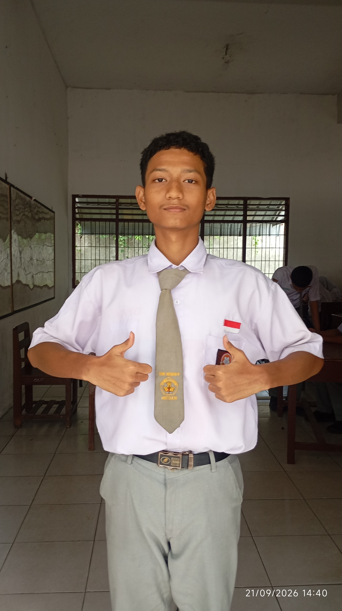

Rezvan Alif Arziki
XI RPL 3
"Tetap berusaha"

Riwayat sekolah
- Sd Sultan Iskandar muda
- Mts Plus Al Ishlah
- SMKN 9 Medan
Pengalaman/prestasi
- Tahun 2023: Mengikuti kegiatan perkemahan jumat sabtu minggu
- Tahun 2025: Mengikuti kegiatan/ekskul paskib di sekolah
- Tahun 2026: Mengikuti ekskul koding di sekolah
Hobi/Pelajaran yang diminati
| Hobi saya bermain game, karena dari kecil saya sudah suka bermain game | pelajaran yang diminati mungkin pelajaran PO,PBO dan MP karena agak masuk di otak |